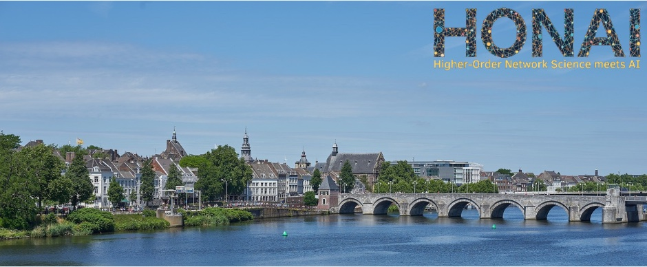
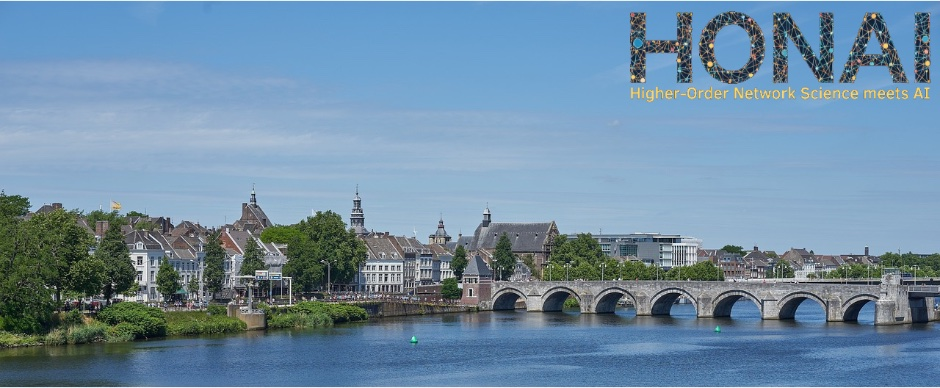

HONAI 2025: Higher-Order Networks meets AI üçØ
While successful in many domains, traditional graph representations and standard algorithmic methods still fall short in capturing crucial higher-order properties of complex systems – from group collaborations to temporal dependencies. HONAI explores how the fusion of AI with advanced network models like simplicial complexes, manifolds, and hypergraphs can revolutionize our understanding of these systems.
Join us in exploring cutting-edge research at the intersection of higher-order network science and AI, focusing on network forecasting, prediction, and completion. We invite contributions from both network scientists and AI specialists, with a strong emphasis on research grounded in higher-order network analysis.
(HONAI = Higher-Order Network science meets AI, pronounced like "honey" üçØ)
Call for Contributions
üìù Submit Your Work
We're accepting contributed talks! Show your love for networks and AI by submitting a one-page abstract with a representative figure to grande@cs.rwth-aachen.de
Deadline: Valentine's Day (February 14th, 2025)
üìö Special Issue Opportunity
Authors of selected contributions will be invited to submit their work to a dedicated Special Issue, "Bridging Network Science and AI," in the Applied Network Science journal.
üéØ Topics of Interest
- Modeling complex systems as higher-order networks
- Applications of higher-order models to network analysis
- Representation learning for hypergraphs and simplicial complexes
- Deep learning models for higher-order interactions
- Forecasting of spatiotemporal networks
- Explainable graph machine learning algorithms
- Topology-aware neural network design
- Visualization techniques for higher-order networks
- Ethical considerations in higher-order network analysis and AI
We look forward to seeing you at HONAI 2025!
 
